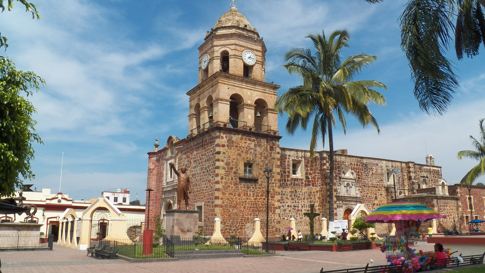
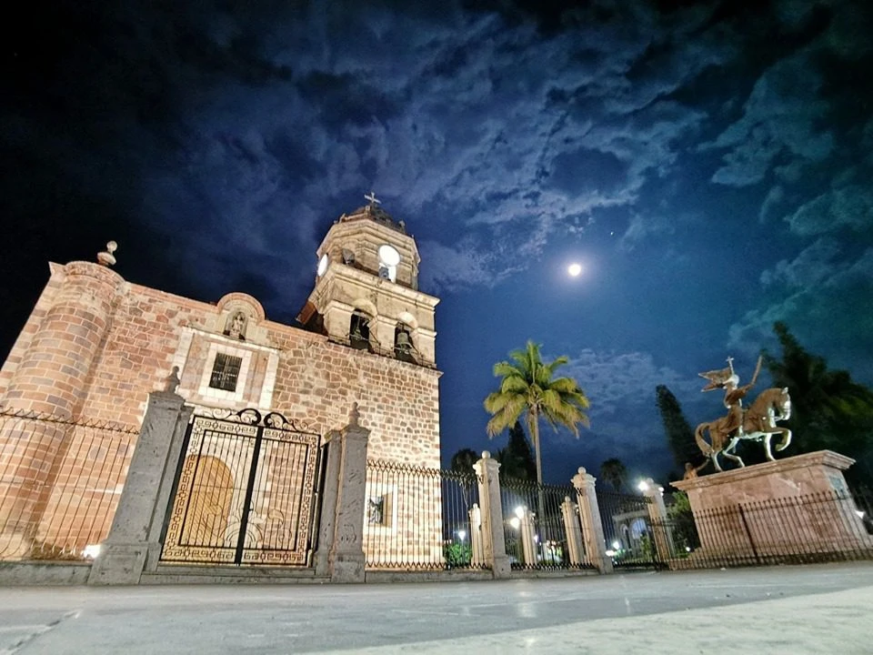
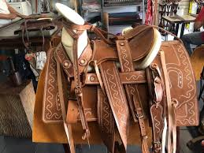
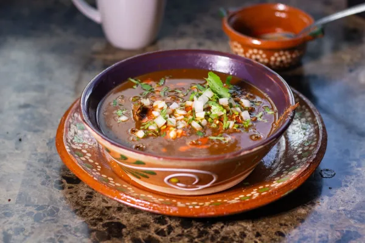

Capital Histórica y Corazón del Municipio
Capital Histórica y Corazón del Municipio
Fundada en 1530 por Nuño de Guzmán, la "Villa de Santiago de Galicia de Compostela" fue la primera capital del reino de la Nueva Galicia. Sus calles respiran historia y sus edificios cuentan relatos de hace casi 500 años.
Hoy en día, Compostela conserva su aire señorial y tranquilo. Es el centro administrativo del municipio y un destino cultural imprescindible, donde la arquitectura colonial se mezcla con la calidez de su gente y tradiciones arraigadas.





Descubre la riqueza de la capital
Una joya arquitectónica del siglo XVI. Su fachada de cantera y sus retablos interiores son impresionantes.
Sumérgete en el pasado prehispánico y colonial de la región a través de su colección de piezas arqueológicas.
Compostela es famosa por sus trabajos en piel y cuero. Visita los talleres locales de monturas y calzado.
La zona alta del municipio produce café de altura de excelente calidad. Disfruta una taza en los portales.
A las afueras de la ciudad, un espacio natural perfecto para días de campo y contacto con la naturaleza.
En diciembre, la ciudad se viste de gala para celebrar al Señor de la Misericordia con peregrinaciones y danzas.
La cocina de Compostela es un reflejo de su mestizaje. Aquí se disfrutan platillos con ingredientes del campo y recetas heredadas por generaciones.

30 min de la Playa
Cálido Subhúmedo
Año 1530
Central de Autobuses
Ven a Compostela y camina por las calles donde nació el estado.
Ver en Google Maps